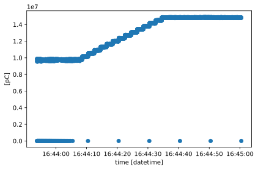

Quick Start Guide#
Overview#
The NeXus Data Format is typically used to structure HDF5 files. An HDF5 file is a container for datasets and groups. Groups are folder-like and work like Python dictionaries. Datasets work like NumPy arrays. In addition, groups and datasets have a dictionary of attributes.
NeXus extends this with the following:
Definitions for attributes for datasets, in particular a
unitsattribute. In NeXus, datasets are referred to as field.Definitions for attributes and structure of groups. This includes:
In the following we use a file from the POWGEN instrument at SNS. It is bundled with ScippNexus and will be downloaded automatically using pooch if it is not cached already:
[1]:
from scippnexus import data
filename = data.get_path('PG3_4844_event.nxs')
Opening files#
Given such a NeXus file, we first need to open it. Wherever possible this should be done using a context manager as follows:
[2]:
# To use the legacy interface, use:
# import scippnexus.v1 as snx
import scippnexus as snx
with snx.File(filename) as f:
print(list(f.keys()))
['entry']
Unfortunately working with a context manager in a Jupyter Notebook is cumbersome, so for the following we open the file directly instead:
[3]:
f = snx.File(filename)
Loading groups and datasets#
This proton_charge group we “navigated” to above is an NXlog, which typically contains 1-D data with a time axis. Since ScippNexus knows about NXlog, it knows how to identify its shape:
[7]:
proton_charge.shape
[7]:
(330473,)
Note:
This is in contrast to plain HDF5 where groups do not have a shape. Note that not all NeXus classes have a defined shape.
We read the NXlog from the file using the slicing notation. To read the entire group, use ellipses (or an empty tuple):
[8]:
proton_charge[...]
[8]:
- time: 330473
- average_value()float64pC12766652.799260454σ = 5061670.635363746
Values:
array(12766652.79926045)
Variances (σ²):
array(2.56205096e+13) - description()stringdescription
Values:
'description' - duration()float32s5508.0
Values:
array(5508., dtype=float32) - maximum_value()float64pC15146700.0
Values:
array(15146700.) - minimum_value()float64pC0.0
Values:
array(0.) - time(time)datetime64ns2011-08-12T15:50:17.000000000, 2011-08-12T15:50:17.016659999, ..., 2011-08-12T17:22:05.085449218, 2011-08-12T17:22:05.102050781
Values:
array(['2011-08-12T15:50:17.000000000', '2011-08-12T15:50:17.016659999', '2011-08-12T15:50:17.033321000', ..., '2011-08-12T17:22:05.068359375', '2011-08-12T17:22:05.085449218', '2011-08-12T17:22:05.102050781'], dtype='datetime64[ns]')
- (time)float64pC1.484e+07, 1.484e+07, ..., 1.487e+07, 1.484e+07
Values:
array([14843360., 14843360., 14787820., ..., 14809180., 14873260., 14839090.])
Above, ScippNexus automatically dealt with:
Loading the data field (signal value dataset and its
'units'attribute).Identifying the dimension labels (here:
'time').Other fields in the group were loaded as coordinates, including:
Units of the fields.
Uncertainties of the fields (here for
'average_value').
This structure is compatible with a scipp.DataArray and is returned as such.
We may also load an individual field instead of an entire group. A field corresponds to a scipp.Variable, i.e., similar to how h5py represents datasets as NumPy arrays but with an added unit and dimension labels (if applicable). For example, we may load only the 'value' dataset:
[9]:
proton_charge['value'][...]
[9]:
- (time: 330473)float64pC1.484e+07, 1.484e+07, ..., 1.487e+07, 1.484e+07
Values:
array([14843360., 14843360., 14787820., ..., 14809180., 14873260., 14839090.])
Attributes of datasets or groups are accessed just like in h5py:
[10]:
proton_charge['value'].attrs['units']
[10]:
'picoCoulombs'
A subset of the group (and its datasets) can be loaded by selecting only a slice. We can also plot this directly using the plot method of scipp.DataArray:
[11]:
proton_charge['time', 193000:197000].plot()
[11]:

As another example, consider the following NXdata group:
[12]:
bank = f['entry/bank103']
print(bank.shape, bank.dims)
(154, 7) ('x_pixel_offset', 'y_pixel_offset')
This can be loaded and plotted as above. In this case the resulting data array is 2-D:
[13]:
da = bank[...]
da
[13]:
- x_pixel_offset: 154
- y_pixel_offset: 7
- x_pixel_offset(x_pixel_offset)float32m-0.3825, -0.3775, ..., 0.3775, 0.3825
Values:
array([-0.3825, -0.3775, -0.3725, -0.3675, -0.3625, -0.3575, -0.3525, -0.3475, -0.3425, -0.3375, -0.3325, -0.3275, -0.3225, -0.3175, -0.3125, -0.3075, -0.3025, -0.2975, -0.2925, -0.2875, -0.2825, -0.2775, -0.2725, -0.2675, -0.2625, -0.2575, -0.2525, -0.2475, -0.2425, -0.2375, -0.2325, -0.2275, -0.2225, -0.2175, -0.2125, -0.2075, -0.2025, -0.1975, -0.1925, -0.1875, -0.1825, -0.1775, -0.1725, -0.1675, -0.1625, -0.1575, -0.1525, -0.1475, -0.1425, -0.1375, -0.1325, -0.1275, -0.1225, -0.1175, -0.1125, -0.1075, -0.1025, -0.0975, -0.0925, -0.0875, -0.0825, -0.0775, -0.0725, -0.0675, -0.0625, -0.0575, -0.0525, -0.0475, -0.0425, -0.0375, -0.0325, -0.0275, -0.0225, -0.0175, -0.0125, -0.0075, -0.0025, 0.0025, 0.0075, 0.0125, 0.0175, 0.0225, 0.0275, 0.0325, 0.0375, 0.0425, 0.0475, 0.0525, 0.0575, 0.0625, 0.0675, 0.0725, 0.0775, 0.0825, 0.0875, 0.0925, 0.0975, 0.1025, 0.1075, 0.1125, 0.1175, 0.1225, 0.1275, 0.1325, 0.1375, 0.1425, 0.1475, 0.1525, 0.1575, 0.1625, 0.1675, 0.1725, 0.1775, 0.1825, 0.1875, 0.1925, 0.1975, 0.2025, 0.2075, 0.2125, 0.2175, 0.2225, 0.2275, 0.2325, 0.2375, 0.2425, 0.2475, 0.2525, 0.2575, 0.2625, 0.2675, 0.2725, 0.2775, 0.2825, 0.2875, 0.2925, 0.2975, 0.3025, 0.3075, 0.3125, 0.3175, 0.3225, 0.3275, 0.3325, 0.3375, 0.3425, 0.3475, 0.3525, 0.3575, 0.3625, 0.3675, 0.3725, 0.3775, 0.3825], dtype=float32) - y_pixel_offset(y_pixel_offset)float32m-0.1629, -0.1086, ..., 0.1086, 0.1629
Values:
array([-0.1629, -0.1086, -0.0543, 0. , 0.0543, 0.1086, 0.1629], dtype=float32)
- (x_pixel_offset, y_pixel_offset)int320, 0, ..., 0, 0
Values:
array([[0, 0, 0, ..., 0, 0, 0], [0, 0, 0, ..., 0, 0, 0], [0, 0, 0, ..., 0, 0, 0], ..., [0, 0, 0, ..., 0, 0, 0], [0, 0, 0, ..., 0, 0, 0], [0, 0, 0, ..., 0, 0, 0]], dtype=int32)
[14]:
da.plot()
[14]: